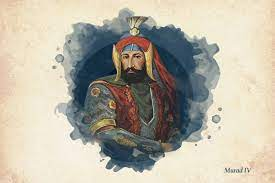

Зміст
МурадIV
(1612-1640) був
султаном Османської імперії протягом 17 років, відомий як "завойовник Багдада" або як
Мурад "жорстокий". Він був наступником престолу Мустафи I, який був його дядьком і другим із синів Ахмеда I,
який зайняв престол як султан.
Його правління мало багато особливостей та анекдотів. Для початку він прибув лише 11-річним хлопчиком. Це
призвело до дуже важливого етапу в Османській імперії, оскільки вперше жінку назвали матір’ю султанкою,
офіційно надавши повноваження Кесем Султану, матері Мурада IV, до досягнення султаном повноліття.

Це був період, коли було прийнято багато рішень з метою зміни адміністративних та зовнішньополітичних аспектів
Османської імперії. Незважаючи на те, що його вважали суворим султаном, держава повернулася до мирного часу, а
його репутація покращилася після занепаду, який він зазнав на початку XVII століття.
Він увійшов в історію як перший правитель, який вбив шейха аль-Іслама. Це було визнано однією з найбільш
поважних особистостей ісламу за його широкі знання.
Біографія
27 липня 1612 року в сучасному Стамбулі народився Мурат Оглу Ахмед I, другий син султана Ахмеда у мене був з
Кесем Султаном, який також отримав ім'я Махпейкер.
Мурат був другим сином султана, який зійшов на трон Османської імперії, оскільки Осман II, один із синів,
якого Ахмед I мав з Махфузом Султаном, досяг цього першим.
Його батько помер, коли Мураду було лише п'ять років.
Мурада IV описували як велику людину. Про його велику силу говорили багато, але не вдалося визначити, чи
відповідав цей опис більше на страх, який він викликав у своїх суперників. Якщо що, його вважали людиною
великого зросту.
Панування
Коронація Мурада IV відбулася 10 вересня 1623 року, коли йому було лише 11 років. Незважаючи на свій вік,
він був призначений замінити свого дядька Мустафу I, який був психічно непридатним і який зазнав змови
власної матері, щоб залишити посаду.
Протягом першого десятиліття контроль над султанатом майже повністю здійснювала мати Мурада IV разом із
групою міністрів, призначених для роботи.
Страх
Щоб отримати контроль над своєю цивілізацією, Мурад IV став дуже побоюваним султаном. Він вбив міністрів,
опонентів, жінок і високопоставлених осіб в арміях. Він розраховував на групу шпигунів, які допомогли йому
знайти завдання винних у розпочаті проти нього заворушеннях у Стамбулі.
У якийсь момент він також хотів вбити вірменських іммігрантів, які жили в Константинополі. Рішення так і не
було здійснено завдяки втручанню одного з міністрів султана.
Врешті-решт йому вдалося повернути правителів Османської імперії до поваги. Він виділявся своїми військовими
навичками в різних битвах, таких як Кавказ та Месопотамія, хоча підкорення Багдада було одним із найбільш
пам’ятних його успіхів.
Раніше він страчував людей, розвішуючи їх на кутах вулиць, хоча міг мати й інші менш передбачувані методи.
Наприклад, одного з його особистих лікарів було вбито, змусивши його надмірно ковтати власний опій.
Під час султанату Мурада IV випробування чи попередні розслідування не були нормальними. Якщо правитель у
щось вірив чи підозрював, з якоїсь причини він вирішив відрубати людям голови.
Дуже горезвісний випадок, коли він убив гінця, який помилково оголосив, що новонароджене у Мурата було
чоловіком, коли воно справді було жінкою.
Вважається, що за час перебування на троні він вбив понад 20 000 людей.
Султанат жінок
Хоча в минулому в османській історії багато жінок відігравали відповідну роль, Кьосем Султан була першою на
офіційній посаді. Її назвали Валіде Султан, що означало мати султана.
Деякі легенди говорять, що він підбурював Мурада IV до гомосексуальних стосунків. Вважається, що це була
одна з причин, чому султан часом виявляв ірраціональну ненависть до жінок.
Османська війна - Сефевід
Ця битва відбулася майже для всього султанату Мурада VI. Він розпочався в 1623 році і складався із суперечки
між Османською імперією та персами за домінування в Месопотамії.
Деякий час османи були зосереджені на боях на європейському континенті, але потім вони змогли відвоювати
Багдад, що було однією з найважливіших перемог Мурада IV.
Конфлікт закінчився 17 травня 1639 р., Майже за рік до смерті Мурада IV. Все сталося завдяки договору
Зухаба, де були визначені межі між персами та османами.
Потомство
Мурад IV мав десяток синів чоловічої статі протягом усього свого правління, але жоден з них
не
прожив
достатньо довго, щоб змінити свого батька на престолі Османської імперії. Останки всіх його
нащадків-чоловіків були поховані в мавзолеї Ахмеда I, у Блакитній мечеті.
У випадку з його дочками все було інакше, оскільки було відомо, що принаймні три з них мали
довше життя: Кая
Султан, Сафіє Султан і Рукія Султан. Всі вони мали шлюби з чоловіками, які обіймали високі посади в
османській армії.
Смерть
Смерть султана Мурада IV сталася, коли йому ще не було 28 років. Один із законів, згідно з яким Султанат
Мурад IV забороняв вживання алкоголю та тютюну. Порушення цього закону було засуджено смертною карою.
Метою Мурада IV було уникнути критики його роботи, оскільки бари, кафе та винні крамниці розглядалися як
сприятливе місце для зустрічей та недоброзичливців до уряду.
Як не дивно, Мурад IV не дотримувався власного закону і страждав від алкогольної залежності. Він помер від
алкогольного цирозу 8 лютого 1640 р. Ібрагім I, його брат, був його спадкоємцем престолу, коли він помер.